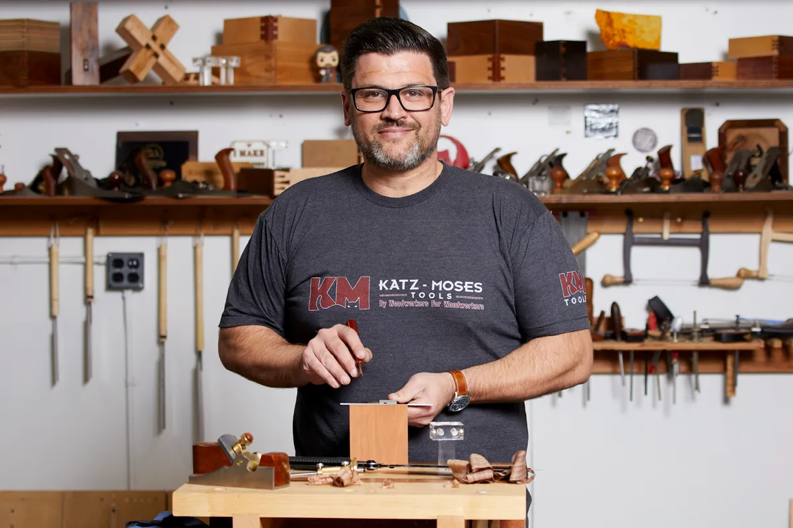

Grandma’s Kitchen Website 2.0: Blending classic recipes with modern web tech to create a fresh, flavorful, and user-friendly experience!
Pronto’s 10-minute house-help pitch sparked a 3.6x valuation jump in just 90 days.
Slow Ventures cuts first check from $60M creator fund into woodworking founder.
Top Headlines
- Grandma's cooking is now serving up recipes and features with a modern twist in site design!
- Trump administration stops illegal freeze of $5B EV charger funds after losing in court
- Ford throws out Henry Ford’s assembly line to make low-cost EVs in America
- iOS 26 beta 6 adds new ringtones, snappy app launches, and more
- Security flaws in a carmaker’s web portal let one hacker remotely unlock cars from anywhere
Latest News!

October 27-29, 2025|San Francisco
Put your brand in front of 10,000+ tech and VC leaders across all three days of Disrupt 2025. Amplify your reach, spark real connections, and lead the innovation charge. Secure your exhibit space before your competitor does. Book Your Table here!
Most Popular:
- The computer science dream has become a nightmare
- Sam Altman addresses ‘bumpy’ GPT-5 rollout, bringing 4o back, and the ‘chart crime’
- Tesla shuts down Dojo, the AI training supercomputer that Musk said would be key to full self-driving
- Key sections of the US Constitution deleted from government’s website
- Instagram takes on Snapchat with new ‘Instagram Map’
- Google says hackers stole its customers’ data by breaching its Salesforce database
- Three weeks after acquiring Windsurf, Cognition offers staff the exit door